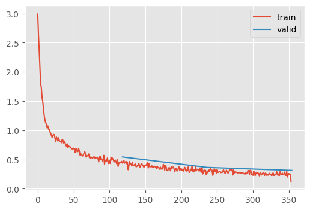
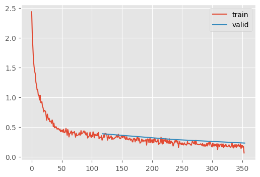
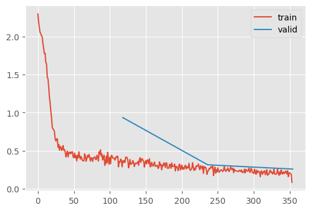

set_seed(42)
plt.style.use("ggplot")ResNets
Can we beat 90% accuracy on FashionMNIST?
Adapted from:
Let’s start by cleaning up some of the module implementations.
class GeneralReLU(nn.Module):
def __init__(self, a=0.1, b=0.4):
"""Generalized ReLU activation function with bias and leaky slope."""
super().__init__()
self.a = a
self.b = b
def forward(self, x):
if self.a:
x = F.leaky_relu(x, self.a)
else:
x = F.relu(x)
if self.b:
x -= self.b
return x
class Conv(nn.Conv2d):
"""Convolutional block with norms and activations"""
def __init__(self, c_in, c_out, stride=2, ks=3, act=True, norm=True):
super().__init__(
c_in,
c_out,
stride=stride,
kernel_size=ks,
padding=ks // 2,
bias=not norm,
)
self.norm = nn.BatchNorm2d(c_out) if norm else None
self.act = GeneralReLU() if act else None
def forward(self, x):
x = super(Conv, self).forward(x)
if self.act:
x = self.act(x)
if self.norm:
x = self.norm(x)
return x
def init_leaky_weights(module):
if isinstance(module, Conv):
if module.act is not None:
init.kaiming_normal_(module.weight, a=module.act.a)
else:
init.kaiming_normal_(module.weight)
class CNN(nn.Module):
"""6 layer convolutional neural network with GeneralReLU"""
def __init__(self, nfs=(8, 16, 32, 64), n_outputs=10, block=Conv):
super().__init__()
self.nfs = nfs
self.n_outputs = n_outputs
self.layers = nn.Sequential(*self.get_layers(nfs, n_outputs, block))
def get_layers(self, nfs, n_outputs=10, C=Conv):
assert len(nfs) == 4
layers = [C(1, 8, ks=5)]
for c_in, c_out in zip(nfs, nfs[1:]):
layers.append(C(c_in, c_out))
layers.append(C(nfs[-1], n_outputs, act=False))
return layers
def forward(self, x):
x = self.layers(x)
bs, c, w, h = x.shape
assert c == self.n_outputs
assert w == h == 1
return rearrange(x, "bs c w h -> bs (c w h)")
@classmethod
def kaiming(cls, *args, **kwargs):
model = cls(*args, **kwargs)
model.apply(init_leaky_weights)
return model_, stats = train_1cycle(CNN.kaiming(nfs=(8, 16, 32, 64)))
0.00% [0/3 00:00<?]
79.66% [94/118 00:06<00:01 0.478]
KeyboardInterrupt
stats.mean_std_plot()Going deeper
At this point, we can try to go deeper by adding a stride 1 convolution layer
class DeeperCNN(CNN):
"""7 layer convolutional neural network with GeneralReLU"""
def get_layers(self, nfs, n_outputs=10, C=Conv):
assert len(nfs) == 5
# Notice we changed the stride to 1 to fit another layer --+
layers = [C(1, 8, ks=5, stride=1)] # 👈 ------------------+
for c_in, c_out in zip(nfs, nfs[1:]):
layers.append(C(c_in, c_out))
layers.append(C(nfs[-1], n_outputs))
return layerstrain_1cycle(DeeperCNN.kaiming(nfs=(8, 16, 32, 64, 128)));| MulticlassAccuracy | loss | epoch | train |
|---|---|---|---|
| 0.783 | 0.764 | 0 | train |
| 0.818 | 0.544 | 0 | eval |
| 0.885 | 0.364 | 1 | train |
| 0.873 | 0.366 | 1 | eval |
| 0.913 | 0.271 | 2 | train |
| 0.895 | 0.314 | 2 | eval |

This gives us 90% in 3 epochs, which is the quickest we’ve been able to achieve that accuracy.
We want to make our networks wider and deeper, but this has a limit even with an apropriate initialization. In “Deep Residual Learning for Image Recognition,” Kaiming observed that a 56 layer network had worse performance than a 20 layer network. Why?
Notice, if the 36 extra layers were \(I\), it should have the same performance of the smaller network. In other words, it’s a superset of the small network. We should be able to table advantage of the initial training dynamics of the shallower network with deeper networks with Skip Connections.

class ResidualBlock(nn.Module):
def __init__(self, inner):
self.inner = inner
def forward(self, x):
x_orig = x
x = self.inner(x)
assert x.shape == x_orig.shape
return x + x_origNote that the shape must not change after the inner transformation. To do so with a Convolutional Neural Network, we need a very simple “Identity” convolution that does the same transformation.
F.avg_pool2d?Docstring: avg_pool2d(input, kernel_size, stride=None, padding=0, ceil_mode=False, count_include_pad=True, divisor_override=None) -> Tensor Applies 2D average-pooling operation in :math:`kH \times kW` regions by step size :math:`sH \times sW` steps. The number of output features is equal to the number of input planes. See :class:`~torch.nn.AvgPool2d` for details and output shape. Args: input: input tensor :math:`(\text{minibatch} , \text{in\_channels} , iH , iW)` kernel_size: size of the pooling region. Can be a single number or a tuple `(kH, kW)` stride: stride of the pooling operation. Can be a single number or a tuple `(sH, sW)`. Default: :attr:`kernel_size` padding: implicit zero paddings on both sides of the input. Can be a single number or a tuple `(padH, padW)`. Default: 0 ceil_mode: when True, will use `ceil` instead of `floor` in the formula to compute the output shape. Default: ``False`` count_include_pad: when True, will include the zero-padding in the averaging calculation. Default: ``True`` divisor_override: if specified, it will be used as divisor, otherwise size of the pooling region will be used. Default: None Type: builtin_function_or_method
class ResidualConvBlock(nn.Module):
"""Convolutional block with residual links"""
def __init__(self, c_in, c_out, stride=2, ks=3, act=True, norm=True):
super().__init__()
self.conv_a = Conv(c_in, c_out, stride=1, ks=ks, act=act, norm=norm)
self.conv_b = Conv(c_out, c_out, stride=stride, ks=ks, act=False, norm=norm)
self.id_conv = nn.Conv2d(c_in, c_out, stride=1, kernel_size=1)
self.act = GeneralReLU() if act else None
def forward(self, x):
x_orig = x.clone()
# Downsample the original, if neccesary
if self.conv_b.stride == (2, 2):
x_orig = F.avg_pool2d(x_orig, kernel_size=2, ceil_mode=True)
elif self.conv_b.stride[0] > 2 or self.conv_b.stride[1] > 2:
raise ValueError
else:
assert self.conv_b.stride == (1, 1)
# Add extra channels, if neccesary
if self.conv_a.in_channels != self.conv_b.out_channels:
x_orig = self.id_conv(x_orig)
x = self.conv_a(x)
x = self.conv_b(x)
return self.act(x + x_orig)m = DeeperCNN.kaiming(nfs=(8, 16, 32, 64, 128), block=ResidualConvBlock)
_ = train_1cycle(m)| MulticlassAccuracy | loss | epoch | train |
|---|---|---|---|
| 0.807 | 0.583 | 0 | train |
| 0.869 | 0.384 | 0 | eval |
| 0.894 | 0.289 | 1 | train |
| 0.893 | 0.288 | 1 | eval |
| 0.926 | 0.201 | 2 | train |
| 0.915 | 0.228 | 2 | eval |

Recall, the previous best was %90.9 after 5 epochs 🥳
Let’s take a closer look at how the parameters are allocated
ShapeCB
ShapeCB (mods=None, mod_filter=<function noop>)
Container for hooks with clean up and and options to target certain modules
shape
shape (m)
for block in [Conv, ResidualConvBlock]:
print(block.__name__)
m = DeeperCNN.kaiming(nfs=(8, 16, 32, 64, 128), block=block)
shape(m)Conv
ResidualConvBlock
0.00% [0/3 00:00<?]
0.00% [0/118 00:00<?]
| Type | Input | Output | N. params |
|---|---|---|---|
| Conv | (512, 1, 28, 28) | (8, 28, 28) | 216 |
| Conv | (512, 8, 28, 28) | (16, 14, 14) | 1,184 |
| Conv | (512, 16, 14, 14) | (32, 7, 7) | 4,672 |
| Conv | (512, 32, 7, 7) | (64, 4, 4) | 18,560 |
| Conv | (512, 64, 4, 4) | (128, 2, 2) | 73,984 |
| Conv | (512, 128, 2, 2) | (10, 1, 1) | 11,540 |
| Total | 110,156 |
0.00% [0/3 00:00<?]
0.00% [0/118 00:00<?]
| Type | Input | Output | N. params |
|---|---|---|---|
| ResidualConvBlock | (512, 1, 28, 28) | (8, 28, 28) | 1,848 |
| ResidualConvBlock | (512, 8, 28, 28) | (16, 14, 14) | 3,664 |
| ResidualConvBlock | (512, 16, 14, 14) | (32, 7, 7) | 14,496 |
| ResidualConvBlock | (512, 32, 7, 7) | (64, 4, 4) | 57,664 |
| ResidualConvBlock | (512, 64, 4, 4) | (128, 2, 2) | 230,016 |
| ResidualConvBlock | (512, 128, 2, 2) | (10, 1, 1) | 13,750 |
| Total | 321,438 |
Indeed, we have almost 3x as many paramters and the training dynamics are quite stable!
How does this compare to a standard implementation?
def train_timm(id):
m = timm.create_model(id, in_chans=1, num_classes=10)
m.layers = [] # Because we're not recording anything
np = sum(p.numel() for p in m.parameters())
print(f"N. parameters: {np:,}")
train_1cycle(m)train_timm("resnet18")N. parameters: 11,175,370| MulticlassAccuracy | loss | epoch | train |
|---|---|---|---|
| 0.776 | 0.663 | 0 | train |
| 0.729 | 0.935 | 0 | eval |
| 0.884 | 0.312 | 1 | train |
| 0.890 | 0.316 | 1 | eval |
| 0.914 | 0.230 | 2 | train |
| 0.906 | 0.260 | 2 | eval |

Slightly better! Of course, this model has 30x more parameters, so it’s not surprising.